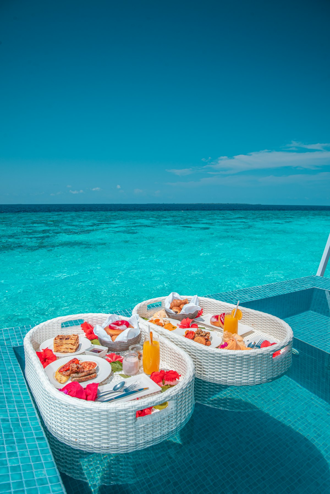
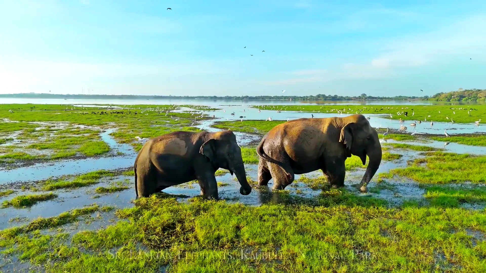
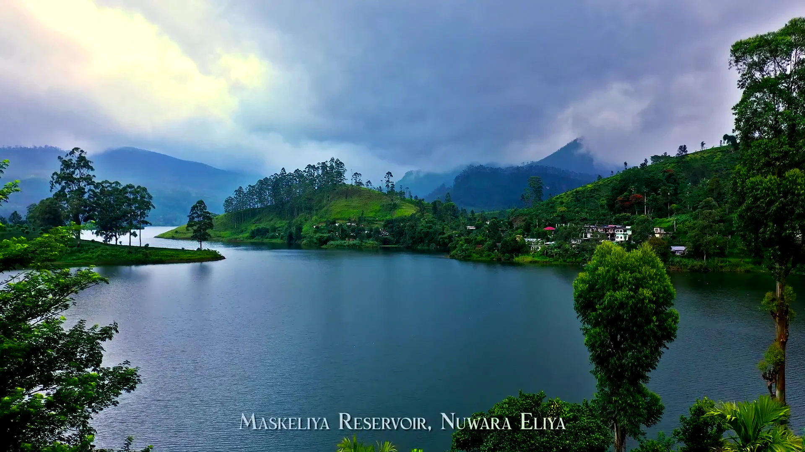
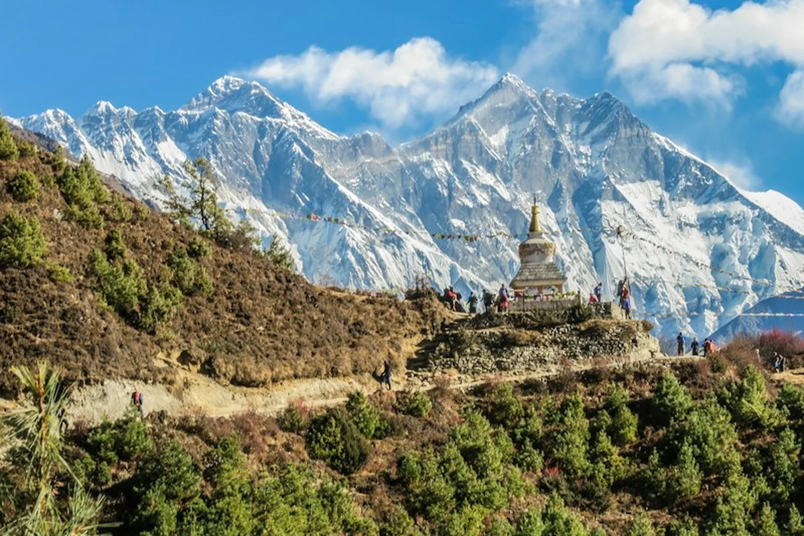
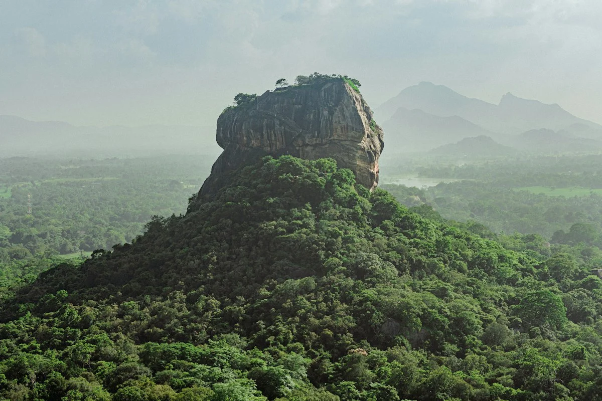
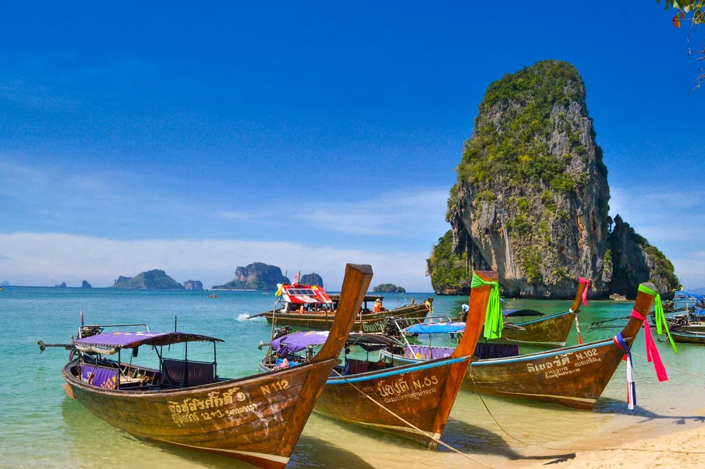
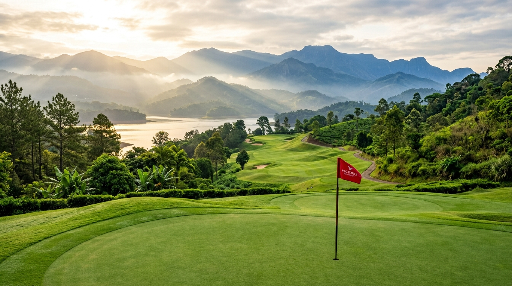
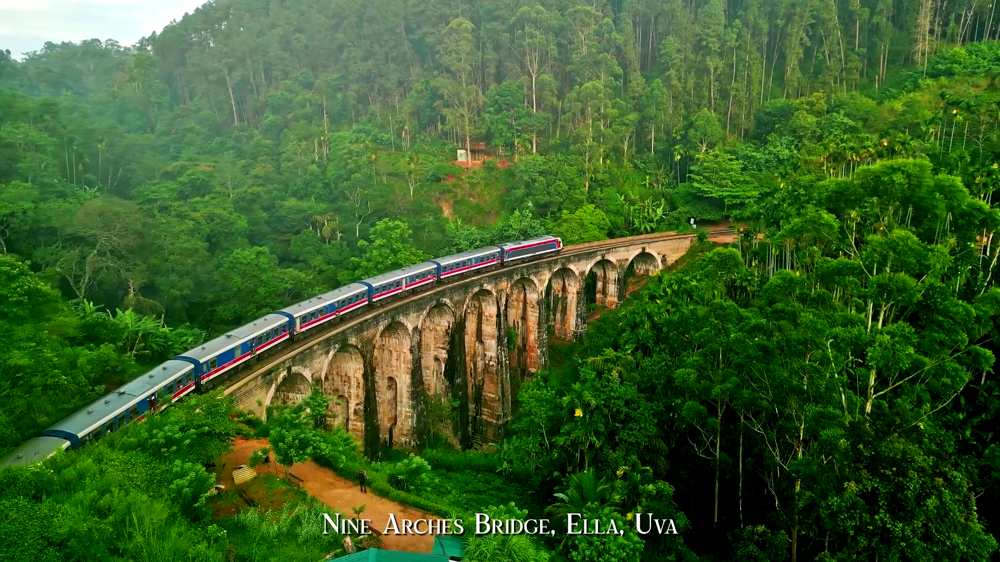
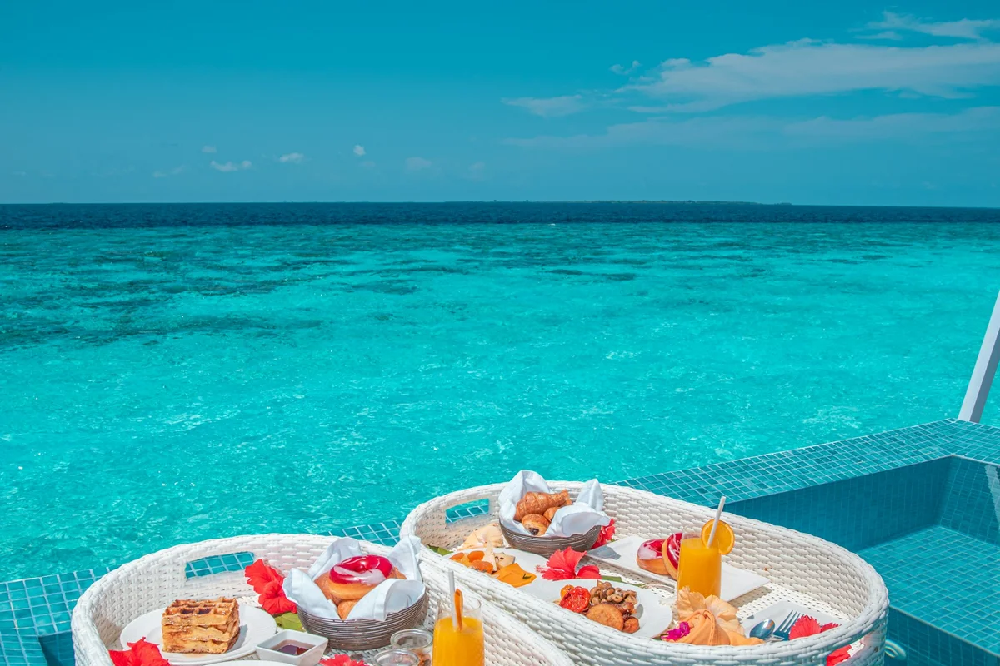
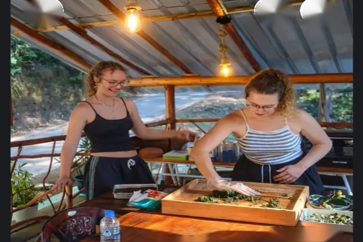

Sacred Sites
Anuradhapura
Ancient capital of great stupas and the revered Sri Maha Bodhi tree.
Explore Destination
➔
LOTUS CEYLON

Inspired by the lotus—a symbol of purity, sacredness, resilience and natural beauty—LOTUS invites you to discover Sri Lanka through journeys that connect you with its nature, culture, heritage and spirit.
LOTUS CEYLON INTERNATIONAL TOURS AND SERVICES (PRIVATE) LIMITED is a premier Sri Lankan inbound tourism company dedicated to creating authentic, meaningful and memorable travel experiences across Sri Lanka.
From cultural heritage and sacred Buddhist sites to wildlife, pristine coasts, misty tea mountains, and the world-renowned flavours of Ceylon, we connect travellers with the people, places and experiences that make Sri Lanka unique with deep cultural understanding and genuine Sri Lankan hospitality.
Officially incorporated and registered Inbound Tour Operator in the Democratic Socialist Republic of Sri Lanka.
Operating dedicated inbound journeys across Sri Lanka with local representative desks across approximately 10 countries, delivering genuine Ceylon hospitality.
100% Tailor-Made Itineraries: Every journey is customized to your personal pace, interests, and budget.
24/7 Dedicated Trip Concierge: Seamless airport VIP arrival greeting and around-the-clock coordinator care.
Sacred Buddhist and Heritage Guidance: Scholarly access to ancient stupas, sacred relics, and cultural immersion.
Private Luxury Fleet and Chauffeur Guides: Impeccable air-conditioned vehicles driven by licensed national guides.
Handpicked Eco and Boutique Stays: Audited heritage tea bungalows, Ayurvedic sanctuaries, and luxury seaside villas.
12+
Years of Inbound Excellence
10+
Global Country Representatives
100%
Tailor-Made Private Itineraries
100%
Luxury Vehicle Fleet
As Sri Lanka’s premier luxury travel specialist, we craft private journeys across eleven signature holiday themes, from tranquil coastal sanctuaries to ancient UNESCO citadels.

Beach Tours
Golden sandy shores, private seaside villas and whale watching

Cultural Tours
Ancient UNESCO kingdoms, sacred temples and living heritage

Buddhist Heritage
Sacred Jaya Sri Maha Bodhi, Dalada Maligawa and forest hermitages

Wildlife Tours
Wild leopard safaris, elephant gatherings and untamed wilderness

Highlands and Tea
Misty emerald tea estates, iconic train railways and waterfalls

Adventure Tours
Whitewater rapids, mountain peaks and ocean point breaks

Ayurveda Wellness
Physician-led panchakarma, sacred herbs and forest serenity

Romantic Escapes
Private plunge-pool villas, candlelight ramparts and sunsets

Family Journeys
Gentle safaris, turtle hatcheries and multi-gen comfort

Ramayana Trails
Sacred legend shrines, Seetha Amman temple and epic trails

Championship Golf
Asia’s oldest royal courses, highland pine links and resorts
sacred destinations
Sri Lanka has been a place of pilgrimage for more than two thousand years. Walk beneath the Sri Maha Bodhi tree in Anuradhapura, climb the hill at Mihintale where, according to tradition, Buddhism first reached the island, and visit the Temple of the Sacred Tooth Relic in Kandy. Between these holy places, lakes, tea hills and quiet coasts give you room to rest.
Ancient capital of great stupas and the revered Sri Maha Bodhi tree.
 Sacred Sites
Sacred Sites
Home of the Sacred Tooth Relic, surrounded by tranquil hills and living traditions.
Cultural Triangle
Dramatic fifth-century rock citadel rising from the jungle with ancient frescoes and water gardens.

Hill CountryMisty mountain ridges, cascading waterfalls, emerald tea trails and the scenic railway.
pure journeys
Each itinerary presented here is an artisanal starting canvas. Explore our hand-designed routes below, each ready to be customized in duration, boutique stays, and daily experiences to match your exact vision.
Cultural and Heritage Triangle
Three Millennia of Living Heritage
14 Nights and 15 Days
Big Five Wildlife Expedition
The Sri Lanka Big Five Expedition
13 Nights / 14 Days
Luxury Coastal Escape
Southern Sands Serenade
9 Nights / 10 Days
Highlands and Planter Estates
Ceylon Tea Trails and Colonial Grandeur
7 Nights / 8 Days
Sacred Wellness and Panchakarma
Lotus Ayu Holistic Rejuvenation
9 Nights / 10 Days
Luxury Honeymoon Romance
Pure Serenade Coastal and Highland Romance
11 Nights / 12 Days
Create your perfect Sri Lankan adventure with our holiday artisans...
Tailor-made itineraries are our defining hallmark at Lotus Ceylon. For over a decade, we have been crafting fully customized holidays tailored precisely to your family's pace, budget, and travel interests. Our destination experts curate the finest private villas, exclusive culinary stops, and insider excursions.
Design Your Trip
real stories
Join us in our responsible journey to give back to mother earth…
With deep reverence for the sacred island, its local communities, and fragile wildlife ecosystems, Lotus Ceylon is committed to carbon-conscious tours, single-use plastic elimination across our fleet, reforestation in the Sinharaja rainforest, and community empowerment.
Explore

Thoughtful stories, seasonal travel advice, and cultural perspectives from our Ceylon destination specialists.
From the soaring stupas of Anuradhapura to the golden cave shrines of Dambulla, explore the living spirituality, meditation sanctuaries, and royal chronicles of Ceylon.
